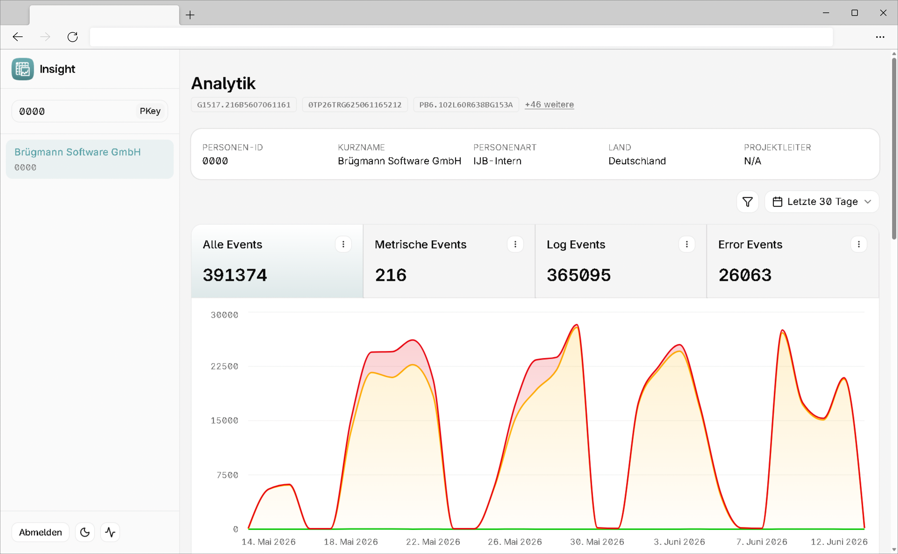

PatOrg: Insight
Softwarelösung zum Sammeln und Auswerten von Daten

Eine Präsentation von Jan Philipps
Inhalt
- Vorstellung
- Analyse
- Entwurf
- Implementierung
- Fazit
Zu mir
- Jan Philipps
- 19 Jahre
- Auszubildener bei Brügmann Software
Brügmann Software GmbH
- 1984 gegründet
- ~60 Mitarbeiter
- Software für gewerbliche Schutzrechte
- PatOrg als Hauptprodukt
- ~300 Kunden

PatOrg
- Patentverwaltungssoftware
- Rechnungsverwaltungssoftware
- Fristenverwaltungssoftware
- Dokumentenverwaltungssoftware
- Personenverwaltungssoftware
- ERP System
Kunden
- Kanzleien
- Unternehmen
- Forschungsinstitutionen
Wie funktioniert PatOrg?
- Besteht aus PatOrg Server, Richclient, Smartclient, Webclient
- Server läuft meistens lokal bei Kunden
- Oracle Datenbank
- Der Richclient spricht direkt mit der Datenbank
- Andere Clients mit dem Server
Analyse
Das Problem
- Keine zentrale Fehlersammlung
- Keine Nutzungsstatistiken
Bedeutet
- Wer bestimmte Funktionen verwendet
- Welche Funktionen nicht verwendet werden
- Zählungsmetriken, wie Anzahl der Akten, Dokumente usw.
Projektvorstellung
- PatOrg Insight
- Zentraler Service
- Richclient/PatOrg Server senden Metriken an PatOrg Insight
- PatOrg Insight speichert & wertet Daten aus
Support Vorteile
- Berater können Fehlermeldungen von Kunden nachvollziehen
- Entwickler können Fehler durch Stacktraces ermitteln
- Weniger Hin- und Her mit Kunden
Entwurf: Technologieauswahl
Was ist zu beachten?
- Große Datenmengen
- Hochverfügbarkeit & Zuverlässigkeit
- Wartbarkeit
- Datenbank: ClickHouse
-
ClickHouse ist eine spaltenorientierte Open-Source-Datenbank für analytische Abfragen über große Datenmengen
— optimiert auf schnelles Einfügen und Aggregieren, nicht auf das Ändern einzelner Datensätze.
Datenbank: Warum ClickHouse?
| Kriterium | ClickHouse | PostgreSQL + TimescaleDB | InfluxDB |
|---|---|---|---|
| Schreibdurchsatz | ✅ | ⚠️ | ✅ |
| Abfragegeschwindigkeit | ✅ | ⚠️ | ⚠️ |
| SQL-Unterstützung | ✅ | ✅ | ❌ |
| Kompression (spaltenorientiert) | ✅ | ⚠️ | ✅ |
| Lizenzkosten | ✅ | ✅ | ⚠️ |
✅ Gut | ⚠️ Eingeschränkt | ❌ Nicht erfüllt
- Datenbank: ClickHouse
- Backend: Bun + Fastify
-
Bun ist eine schnelle JavaScript-Runtime mit nativem TypeScript-Support. Kein Build-Schritt nötig. Fastify
ist ein leichtgewichtiges Web-Framework
mit eingebauter JSON-Schema-Validierung pro Route.
Backend: Warum Bun + Fastify?
| Kriterium | Bun + Fastify | Node.js + Express | Deno + Hono |
|---|---|---|---|
| TypeScript nativ | ✅ | ❌ | ✅ |
| Geschwindigkeit | ✅ | ⚠️ | ✅ |
| npm-Kompatibilität | ✅ | ✅ | ⚠️ |
| Eingebaute Validierung | ✅ | ❌ | ⚠️ |
| Ökosystem-Reife | ✅ | ✅ | ⚠️ |
✅ Gut | ⚠️ Eingeschränkt | ❌ Nicht erfüllt
- Datenbank: ClickHouse
- Backend: Bun + Fastify
- Frontend: React + TanStack Router
- React ist eine komponentenbasierte JavaScript-Bibliothek für Benutzeroberflächen;
TanStack Router ergänzt sie um typsicheres, dateibasiertes Routing innerhalb der Single-Page-Application.
flowchart TD
A[Richclient] -->|X-Hash Header| D("REST-API Bun + Fastify")
B["PatOrg Server Eventbus"] -->|X-Hash Header| D
D -->|"Validierung & Pufferung"| E[(ClickHouse)]
D -->|Aggregierte Abfragen| F[React Dashboard]
Authentifizierung
Ingest
- Authentifizierung über Lizenz-Hash Header
- Vergleich mit Lizenz-Hash aus lokaler Oracle Datenbank
- Hash-Cache im RAM → O(1) Validierung, alle 15 Minuten aktualisiert
flowchart TD
A["RichClient / PatOrg Server"] --> |"Daten mit X-Hash"| B(PatOrg Insight)
B --> C{Hash-Cache Vergleich}
C -->|Kunde gefunden| D[Daten mit Kunden-Id speichern]
C -->|Kunden nicht gefunden| E[Daten verwerfen]
Dashboard
- Kein eigenes Benutzersystem
- JWT über bestehende PatOrg Instanz (Web API)
- Alle Mitarbeitenden haben bereits ein Konto
Implementierung
Herausforderung: Datenverlust vermeiden
Problem: Direktes Schreiben in ClickHouse pro Request zu riskant
Lösung: In-Memory Puffer mit atomarem Tausch
- Eingehende Events → Puffer
- Alle 2 Sekunden: Puffer atomar tauschen
- Insert in ClickHouse
- Bei Fehler: Daten zurück in Puffer
CREATE TABLE IF NOT EXISTS insight.otel_metrics
(
timestamp DateTime64(3),
name LowCardinality(String),
version LowCardinality(String),
release LowCardinality(String),
customer_id LowCardinality(String),
service LowCardinality(String),
metric_type LowCardinality(String),
attributes Map(String, String)
)
ENGINE = MergeTree
PARTITION BY toDate(timestamp)
ORDER BY (customer_id, name, timestamp);
Das Dashboard


PatOrg Server Datenübertragung
Private Shared Sub InsightCall(payload As String)
Using client As New WebClient()
client.Headers.Add("X-Hash", _systemHash)
client.Headers.Add("Content-Type", "application/json")
Try
client.UploadString(INSIGHT_URL, payload)
Catch ex As Exception
' Fehler merken - PatOrg läuft normal weiter
_errors.Add(ex.Message)
End Try
End Using
End Sub
PatOrg Insight Datenauswertung
SELECT metric_type, COUNT(*) AS count
FROM insight.otel_metrics
PREWHERE
timestamp >= fromUnixTimestamp64Milli({from:UInt64})
AND timestamp <= fromUnixTimestamp64Milli({to:UInt64})
WHERE
customer_id = {customer_id:String}
AND service = {service:String}
GROUP BY metric_type
Fazit
- Alle Anforderungen umgesetzt
- PatOrg Insight ist bereits in Betrieb
- Gutes Feedback von Beratern & Geschäftsführung
Ausblick
- Versionsmigrations-Übersicht
- Integration in weitere Brügmann-Produkte
- Kundenansicht im WebClient
Vielen Dank
Fragen?